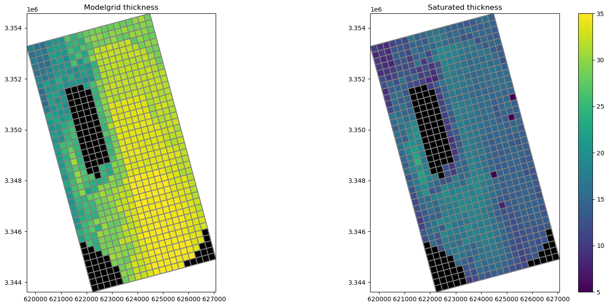
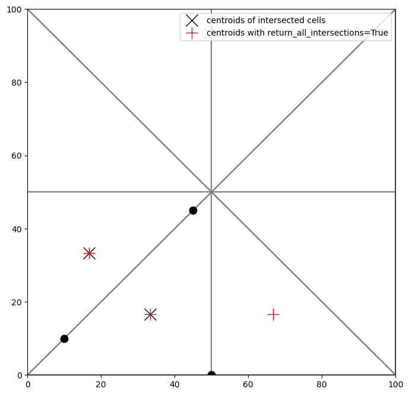
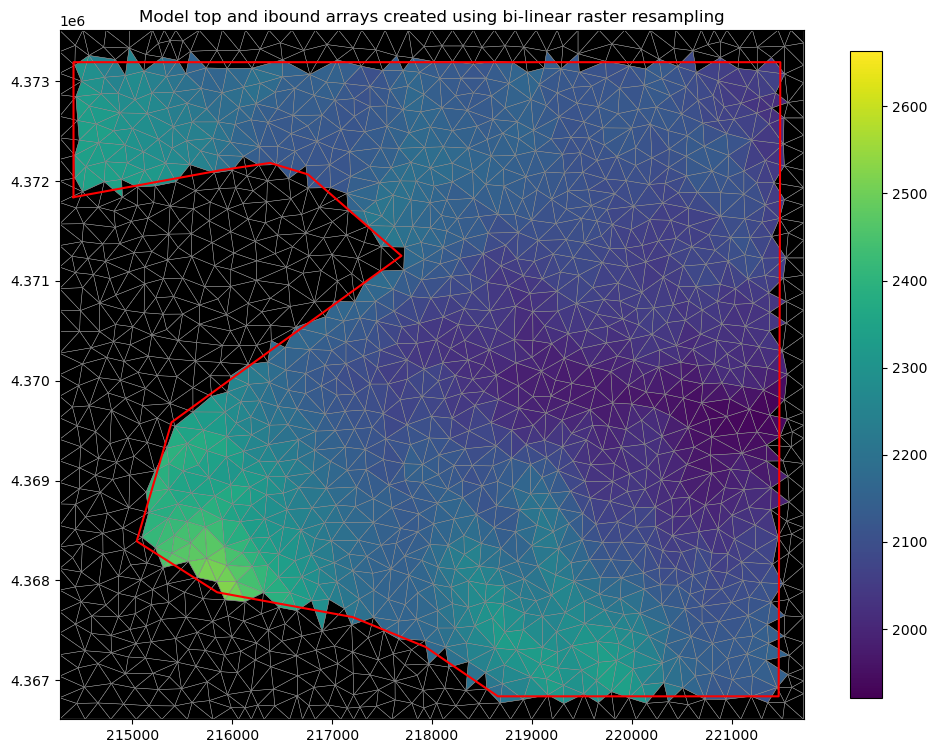
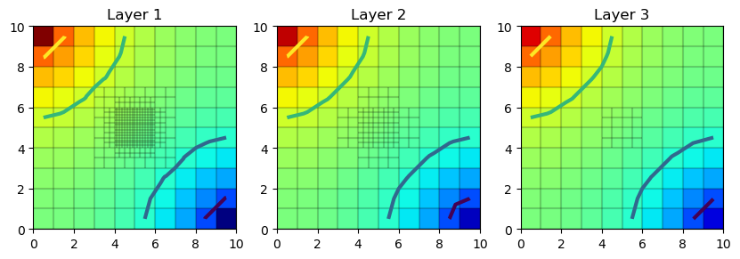
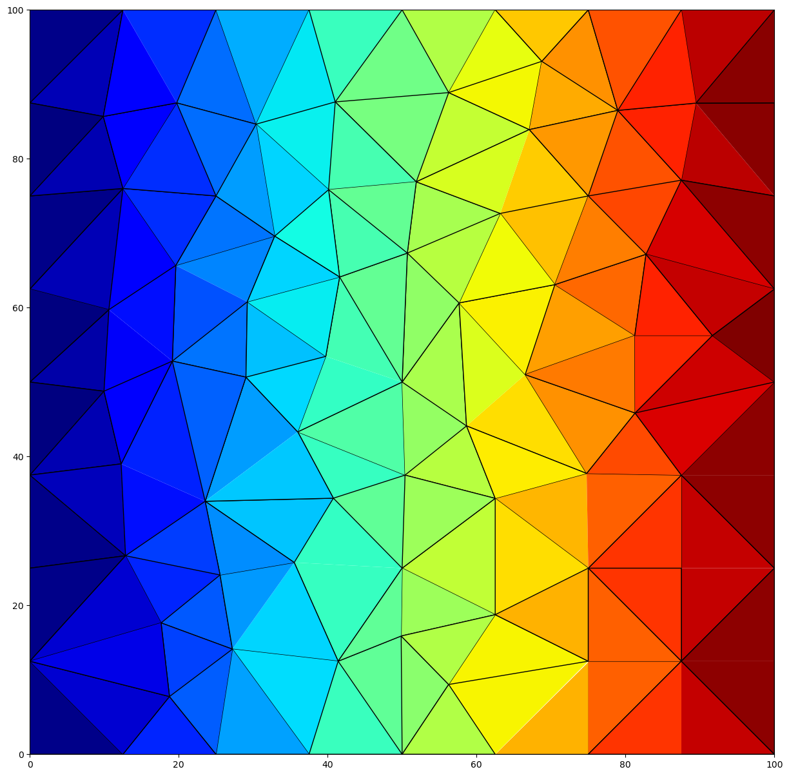
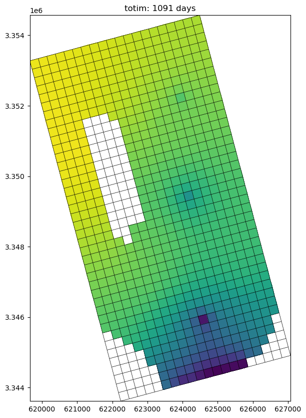
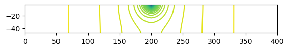
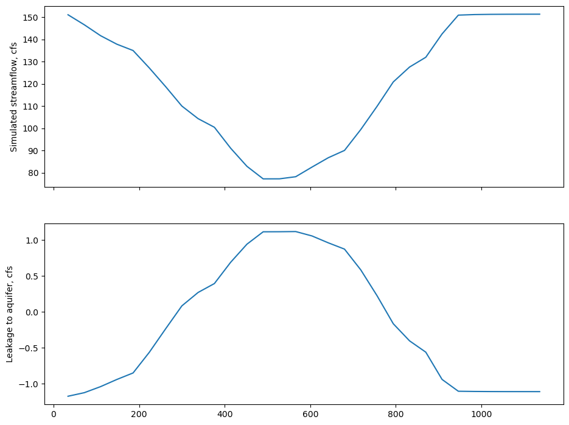
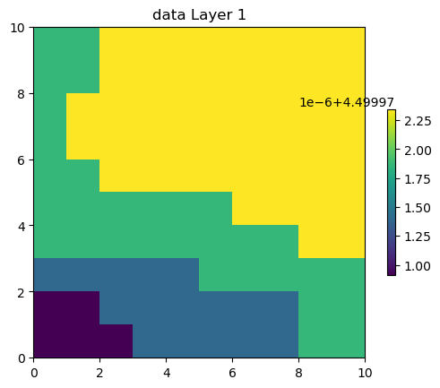
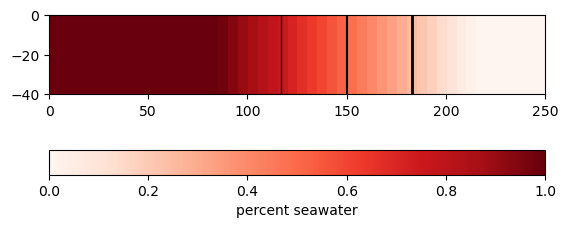

Examples Gallery
The following examples illustrate the functionality of Flopy. After the tutorials, the examples are the best resource for learning the underlying capabilities of FloPy.
Preprocessing and Discretization

ModelGrid classes demo

Intersecting model grids with shapes

Intersecting rasters with modelgrids using FloPy’s Raster class

Creating Layered Quadtree Grids with GRIDGEN

Triangular mesh example

Voronoi Grid and MODFLOW 6 Flow and Transport Example
Postprocessing and Visualization


Exporting data
MODFLOW 6 examples
MODFLOW USG examples
MODFLOW-2005/MODFLOW-NWT examples

FloPy working stack demo

MODFLOW-2005 Basic stress packages

Lake Package Example
Working with the Multi-node Well (MNW2) Package

SFR package Prudic and others (2004) example
Loading and querying an SFR2 Package dataset

Unsaturated Zone Flow (UZF) Package demo

Flopy Drain Return (DRT) capabilities
Working with MODFLOW-NWT v 1.1 option blocks

SWI2 Example 1. Rotating Interface

SWI2 Example 4. Upconing Below a Pumping Well in a Two-Aquifer Island System

Simple water-table solution with recharge
MODPATH examples

MT3D and SEAWAT


PEST support
Other Flopy features

Examples from Bakker and others (2016)
Bakker, Mark, Post, Vincent, Langevin, C. D., Hughes, J. D., White, J. T., Starn, J. J. and Fienen, M. N., 2016, Scripting MODFLOW Model Development Using Python and FloPy: Groundwater, v. 54, p. 733–739, https://doi.org/10.1111/gwat.12413.